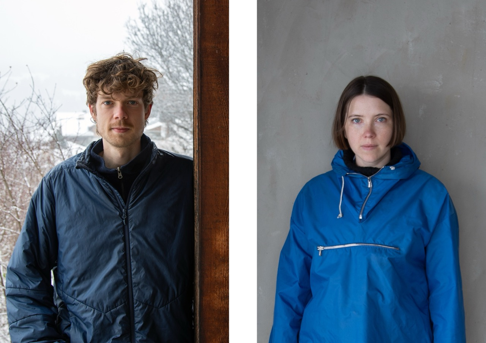

LINYER ist ein Architekturbüro mit Sitz in Stockholm und Zürich, gegründet und betrieben von Lowis Gujer und Emma Lindén seit 2024.
In ihrem Schaffen legen sie den Fokus auf kleine Projekte mit lokalen Akteuren und natürlichen Baumaterialien.
Oftmals sind sie auf der Suche nach architektonischer Formgebung, die mit den vorliegenden Ressourcen zusammenhängen:
Weiterbauen, Wiederverwenden, und wenn Neu, dann mit biogenen Baumaterialien wie zum Beispiel Holz.
Ihr Interessen umfassen eine breite Palette von Themen wie Entwürfe für öffentliche Gebäude und Bildungseinrichtungen,
konstruktive Detaillösungen im Massstab 1:1, Visualisierung von Ideen durch Illustrationen und Modelle, Lehre und öffentliche Workshops,
Stadtplanung und Schreiben.
Emma Lindén (geb. 1994, Stockholm SE) ist Architektin SAR/MSA. Während ihres Studiums an der Königlichen Technischen Hochschule Stockholm absolvierte sie ein Austauschjahr an der ETHZ. Sie arbeitete für General Architecture, Lütjens Padmanabhan, Maich Swift und Boltshauser Architekten.
Lowis Gujer (geb. 1995, Zürich CH) ist Architekt MSc Arch. ETHZ. Er schloss sein Studium an der ETHZ mit einer Diplomarbeit zum Thema „Eine Stadt ohne Schlachthof?“ unter der Leitung von Prof. Momoyo Kaijima ab. Nach Erfahrungen in Architekturbüros in Zürich, Stockholm und London arbeitet er seit Anfang 2024 am Lehrstuhl für Architectural Behaviorology. Dort ist er als wissenschaftlicher Assistent für den Entwurfskurs im zweiten Jahr, den Masterkurs "Japan Studio" und weitere Lehrprojekte tätig.
KONTAKT
contact@linyer.info
4. OG Neue Hard 12
CH-8004 Zürich
PROJEKTLISTE
2504 - HUSA
Renovation eines Blockhauses in Hälsingland, Schweden, 2025, Studie
Bauherrschaft: Privat
2503 - BORTSÄNKES MOT NEDMONTERING
Bewerbung für das Einar Mattson Stipendium, ArkDes, Stockholm, Schweden, 2025, Bewerbung
mit Unterstützung von CONTEM
2502 - GOTTSUNDA SKOG
600 Wohneinheiten, Kindergarten und Umbau des Gottsunda Center in Uppsala, Schweden, 2025, Wettbewerb (letzte Runde)
Landschaftarchitektur: Studio Era
Bauherrschaft: Uppsala Kommun / Hemmaplan
2406 - FH SAMUN
Renovation eines Ferienhauses in Falera, Schweiz, 2024, In Planung
Bauherrschaft: Privat
2405 - SOCIAL LOFT
Wohnungsbau mit Re-Use Konzept in Basel, Schweiz, 2024, Wettbewerb
mit Alois Merkt und Zoé Rüttimann
Bauherrschaft: SBB Immobilien
2404 - AUFSTOCKEN UND ERGÄNZEN
Wohnungsbau in Zürich, Schweiz, 2024, Wettbewerb
Landschaftsarchitektur: Lars Ruge
Bauherrschaft: Baugenossenschaft Waidberg BGW
2403 - DER HOLLÄNDER
Musikschule und Vereinszentrum in Zug, Schweiz, 2024, Wettbewerb
mit Dalla Santa Birkeland Arkitekten
Landschaftsarchitektur: Lauro Nächt
Bauleitung: Bauseits Partner AG
Bauingenieur: Synaxis AG
HLKS: 3-Plan AG
Brandschutz: Zostera Brandschutzplanung GmbH
Bauherrschaft: Einwohnergemeinde Cham
2402 - RINGELREIHE
Doppelkindergarten in Wil, St. Gallen, Schweiz, 2024, Wettbewerb
mit Atikollektiv
Landschaftsarchitektur: Simone Pietscher
Bauingenieur: Saman Hekmati
Bauherrschaft: Stadt Wil
2401 - WANDLER
Stadthaus in Romanshorn, Schweiz, 2024, Wettbewerb
Landschaftsarchitektur: Beatrice Kiser
Bauherrschaft: Stadt Romanshorn
2202 - ÄLVSALA
Renovation und Erweiterung eines Ferienhauses in Värmdö, Schweden, 2022, Studie
Bauherrschaft: Privat
2201 - BJÖRKVIK
Umbau und Erweiterung eines Ferienhauses in Värmdö, Schweden, 2022, Studie
Bauherrschaft: Privat
2101 - HAUS FÜR ZWEI BRÜDER
Ferienhaus in Dalarna, Schweden, 2021, Realisiert
Bauherrschaft: Privat
LEHRE
JAPAN STUDIO 3 "STONE, WOOD, SOIL"
Lehrassistent für den Entwurfskurs im Master am Lehrstuhl für Architectural Behaviorology, D-ARCH, ETHZ, 2025
BAMBUS GEWÄCHSHAUS
Lehrassistent für den Workshop im Master am Lehrstuhl für Architectural Behaviorology, D-ARCH, ETHZ, 2025
KLIMA KÜCHE
Lehrassistent für den Workshop im Master am Lehrstuhl für Architectural Behaviorology, D-ARCH, ETHZ, 2025
DESIGN FOR CLIMATE
Lehrassistent für den Entwurfskurs im Master am Lehrstuhl für Architectural Behaviorology, D-ARCH, ETHZ, Zürich, Schweiz, 2024
JAPAN STUDIO 2 "CARE HUBS"
Lehrassistent für den Entwurfskurs im Master am Lehrstuhl für Architectural Behaviorology, D-ARCH, ETHZ, Zürich, Schweiz, 2024
PUBLIC SPACE BEHAVIOROLOGY
Lehrassistent für den Entwurfskurs im zweiten Jahr am Lehrstuhl für Architectural Behaviorology, D-ARCH, ETHZ, Zürich, Schweiz, 2024
PUBLIKATIONEN
BERGDÖRFER UND IHRE MÖGLICHE ENTWICKLUNG
Interview in der Lokalzeitung "Pöschtli" über das Japan Studio 3 "STONE, WOOD, SOIL" im Rahmen des Lehrprojekts Domleschg, Schweiz, 2025
mit Stefan Kurath, Thomas Weiss, Michael Wagner, Oscar Buscon, Kees Christiaanse
2407 - DIE SÄULENHALLE: ENDLICH EIN ZENTRUM FÜR ZÜRICH WEST!
Themenheft des Architekturmagazins Hochparterre, Zürich, Schweiz, 2025
Arbeitsgruppe: Martin Hofer (Architekt und Immobilienfachmann, Leiter und Konzeptverfasser), Köbi Gantenbein (Soziologem, Leiter und Sekretär), Dominique Ghiggi (Landschaftsarchitektin, Ghiggi Paesaggi Landschaft und Städtebau, Zürich), Christoph Gysi (Präsident der "Vereinigung Industrict Zürich West, aus Industrie wird Kultur", Zürich), Christoph Kellenberger (Architekt und Gründungspartner Büro OOS, Zürich), Markus Knauss (Co-Geschäftsleiter des Verkehrs-Clubs der Schweiz und Gemeinderat), Maresa Kuhn (Stadt- und Projektentwicklerin im Büro Belebung & Begegnung, Zürich), Jordi Riegg (Raum- und Verkehrsplaner im Büro Rombo, Zürich), Alain Thierstein (Stadtentwickler, Delegierter Hamasil Stiftung), Hamasil Stiftung (Auftraggeberin, Finanzierung)
Illustrationen mit Nando von Arb
"DAS INTERESSE DER OTELFINGER FREUT UNS"
Interview in der Lokalzeitung "Furttaler" über das Japan Studio 2 "Care Hubs", Schweiz, 2024
2302 EINE STADT OHNE SCHLACHTHOF?
Artikel für die Campusrubrik des Architekturmagazins Hochparterre, Zürich, Schweiz, 2024
2301 - TRANS MAGAZIN #42 TIME
Redaktion des Architekturmagazins trans des Architekturdepartements der ETH, Zürich, Schweiz, 2023
Co-Redaktion: Tatjana Bergmeister, Carolina Catarino Gomes, Zoé Rüttimann
2203 - TRANS MAGAZIN #41 FIRE
Redaktion des Architekturmagazins trans des Architekturdepartements der ETH, Zürich, Schweiz, 2023
Co-Redaktion: Sebastian Baumann, Tatjana Bergmeister, Sophia Garner
2102 - WORK IS OVER
Artikel für die 38. Ausgabe des Architekturmagazins trans "REPRODUCTION" des Architekturdepartements der ETH, Zürich, Schweiz, 2021